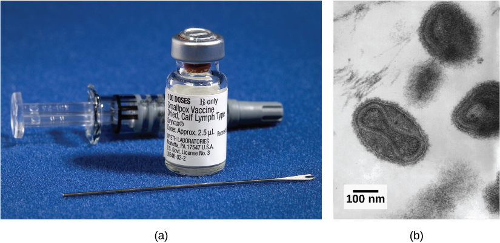
Organisms have a wide array of adaptations for preventing attacks of parasites and diseases. The vertebrate defense systems, including those of humans, are complex and multilayered, with defenses unique to vertebrates. These unique vertebrate defenses interact with other defense systems inherited from ancestral lineages, and include complex and specific pathogen recognition and memory mechanisms. Research continues to unravel the complexities and vulnerabilities of the immune system.
Despite a poor understanding of the workings of the body in the early 18th century in Europe, the practice of inoculation as a method to prevent the often-deadly effects of smallpox was introduced from the courts of the Ottoman Empire. The method involved causing limited infection with the smallpox virus by introducing the pus of an affected individual to a scratch in an uninfected person. The resulting infection was milder than if it had been caught naturally and mortality rates were shown to be about two percent rather than 30 percent from natural infections. Moreover, the inoculation gave the individual immunity to the disease. It was from these early experiences with inoculation that the methods of vaccination were developed, in which a weakened or relatively harmless (killed) derivative of a pathogen is introduced into the individual. The vaccination induces immunity to the disease with few of the risks of being infected. A modern understanding of the causes of the infectious disease and the mechanisms of the immune system began in the late 19th century and continues to grow today.
- 17.1 Viruses
- Describe how viruses were first discovered and how they are detected
- Explain the detailed steps of viral replication
- Describe how vaccines are used in prevention and treatment of viral diseases
- 17.2 Innate Immunity
- Describe the body's innate physical and chemical defenses
- Explain the inflammatory response
- Describe the complement system
- 17.3 Adaptive Immunity
- Explain adaptive immunity
- Describe cell-mediated immune response and humoral immune response
- Describe immune tolerance
- 17.4 Disruptions in the Immune System
- Describe hypersensitivity
- Define autoimmunity
| # | Lesson | Key Concepts | Source |
|---|---|---|---|
| 1 | Viruses Part 1 | Virus discovery, virions, capsid, capsomeres, envelope, glycoproteins, viral receptors, bacteriophages, DNA viruses, RNA viruses, viral replication cycle, lytic cycle, lysogenic cycle, retroviruses, HIV | CB 17.1 (first half) |
| 2 | Viruses Part 2 | Viral diseases, vaccines, attenuation, back mutations, antiviral drugs, HAART, influenza, HIV/AIDS, emerging viruses, prions | CB 17.1 (second half) |
| 3 | Innate Immunity | Physical barriers, chemical defenses, inflammatory response, phagocytosis, neutrophils, macrophages, cytokines, interferons, natural killer cells, complement system | CB 17.2 |
| 4 | Adaptive Immunity | B cells, T cells, humoral immunity, cell-mediated immunity, antibodies, antigens, MHC, helper T cells, cytotoxic T cells, immunological memory, lymphatic system, immune tolerance | CB 17.3 |
| 5 | Immune Disruptions | Immunodeficiency, hypersensitivities, allergies, anaphylactic shock, autoimmunity, molecular mimicry | CB 17.4 |
| 6 | Practice Test | All topics — comprehensive assessment | All |
| Standard | Description | Lessons |
|---|---|---|
| BIO.4a | Investigating and understanding how organisms maintain homeostasis | 1, 2, 3, 4, 5 |
| BIO.4b | Understanding the role of the immune system in body regulation and defense | 3, 4, 5 |
| BIO.4c | Understanding how organ systems interact to maintain homeostasis | 1, 2, 3, 4, 5 |
- Describe how viruses were first discovered and how they are detected
- Explain the detailed steps of viral replication
- Describe how vaccines are used in prevention and treatment of viral diseases
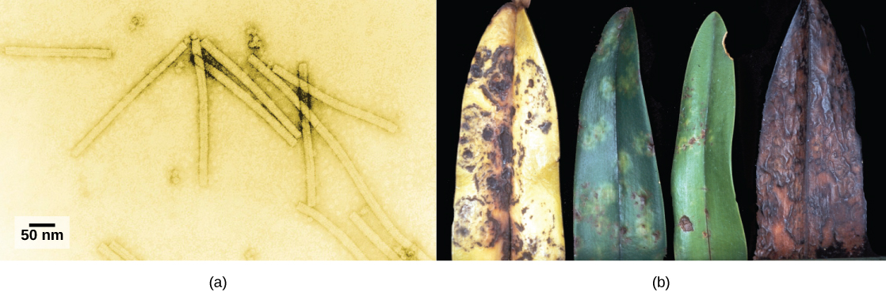
No one knows exactly when viruses emerged or from where they came, since viruses do not leave historical footprints such as fossils. Modern viruses are thought to be a mosaic of bits and pieces of nucleic acids picked up from various sources along their respective evolutionary paths. Viruses are acellular, parasitic entities that are not classified within any domain because they are not considered alive. They have no plasma membrane, internal organelles, or metabolic processes, and they do not divide. Instead, they infect a host cell and use the host's replication processes to produce progeny virus particles. Viruses infect all forms of organisms including bacteria, archaea, fungi, plants, and animals. Living things grow, metabolize, and reproduce. Viruses replicate, but to do so, they are entirely dependent on their host cells. They do not metabolize or grow, but are assembled in their mature form.
Viruses are diverse. They vary in their structure, their replication methods, and in their target hosts or even host cells. While most biological diversity can be understood through evolutionary history, such as how species have adapted to conditions and environments, much about virus origins and evolution remains unknown.
Viruses were first discovered after the development of a porcelain filter, called the Chamberland-Pasteur filter, which could remove all bacteria visible under the microscope from any liquid sample. In 1886, Adolph Meyer demonstrated that a disease of tobacco plants, tobacco mosaic disease, could be transferred from a diseased plant to a healthy one through liquid plant extracts. In 1892, Dmitri Ivanowski showed that this disease could be transmitted in this way even after the Chamberland-Pasteur filter had removed all viable bacteria from the extract. Still, it was many years before it was proven that these "filterable" infectious agents were not simply very small bacteria but were a new type of tiny, disease-causing particle.
Virions, single virus particles, are very small, about 20–250 nanometers (1 nanometer = 1/1,000,000 mm). These individual virus particles are the infectious form of a virus outside the host cell. Unlike bacteria (which are about 100 times larger), we cannot see viruses with a light microscope, with the exception of some large virions of the poxvirus family (Figure 17.3).
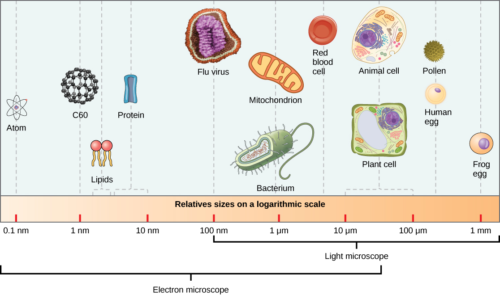
It was not until the development of the electron microscope in the 1940s that scientists got their first good view of the structure of the tobacco mosaic virus (Figure 17.2) and others. The surface structure of virions can be observed by both scanning and transmission electron microscopy, whereas the internal structures of the virus can only be observed in images from a transmission electron microscope (Figure 17.4).
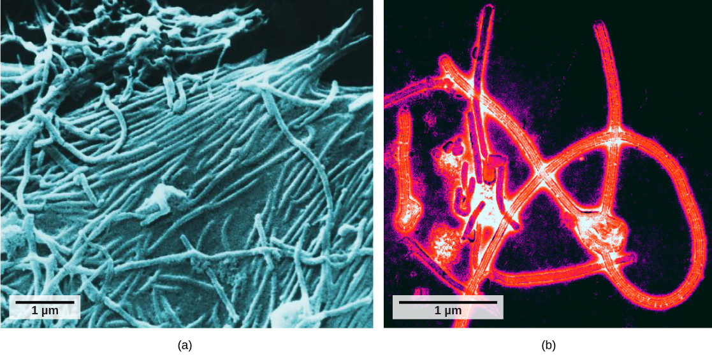
The use of this technology has allowed for the discovery of many viruses of all types of living organisms. They were initially grouped by shared morphology, meaning their size, shape, and distinguishing structures. Later, groups of viruses were classified by the type of nucleic acid they contained, DNA or RNA, and whether their nucleic acid was single- or double-stranded. More recently, molecular analysis of viral replication cycles has further refined their classification.
A virion consists of a nucleic-acid core, an outer protein coating, and sometimes an outer envelope made of protein and phospholipid membranes derived from the host cell. The most visible difference between members of viral families is their morphology, which is quite diverse. An interesting feature of viral complexity is that the complexity of the host does not correlate to the complexity of the virion. Some of the most complex virion structures are observed in bacteriophages, viruses that infect the simplest living organisms, bacteria.
Viruses come in many shapes and sizes, but these are consistent and distinct for each viral family (Figure 17.5). All virions have a nucleic-acid genome covered by a protective layer of protein, called a capsid. The capsid is made of protein subunits called capsomeres. Some viral capsids are simple polyhedral "spheres," whereas others are quite complex in structure. The outer structure surrounding the capsid of some viruses is called the viral envelope. All viruses use some sort of glycoprotein to attach to their host cells at molecules on the cell called viral receptors. The virus exploits these cell-surface molecules, which the cell uses for some other purpose, as a way to recognize and infect specific cell types. For example, the measles virus uses a cell-surface glycoprotein in humans that normally functions in immune reactions and possibly in the sperm-egg interaction at fertilization. Attachment is a requirement for viruses to later penetrate the cell membrane, inject the viral genome, and complete their replication inside the cell.
The T4 bacteriophage, which infects the E. coli bacterium, is among the most complex virion known; T4 has a protein tail structure that the virus uses to attach to the host cell and a head structure that houses its DNA. Adenovirus, a nonenveloped animal virus that causes respiratory illnesses in humans, uses protein spikes protruding from its capsomeres to attach to the host cell. Nonenveloped viruses also include those that cause polio (poliovirus), plantar warts (papillomavirus), and hepatitis A (hepatitis A virus). Nonenveloped viruses tend to be more robust and more likely to survive under harsh conditions, such as the gut.
Enveloped virions like HIV (human immunodeficiency virus), the causative agent in AIDS (acquired immune deficiency syndrome), consist of nucleic acid (RNA in the case of HIV) and capsid proteins surrounded by a phospholipid bilayer envelope and its associated proteins (Figure 17.5). Chicken pox, influenza, and mumps are examples of diseases caused by viruses with envelopes. Because of the fragility of the envelope, nonenveloped viruses are more resistant to changes in temperature, pH, and some disinfectants than enveloped viruses.
Overall, the shape of the virion and the presence or absence of an envelope tells us little about what diseases the viruses may cause or what species they might infect, but is still a useful means to begin viral classification.
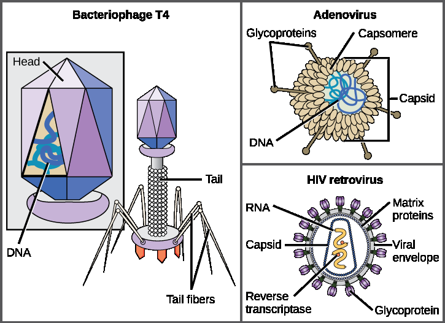
a. All viruses are encased in a viral membrane.
b. The capsomere is made up of small protein subunits called capsids.
c. DNA is the genetic material in all viruses.
d. Glycoproteins help the virus attach to the host cell.
Unlike all living organisms that use DNA as their genetic material, viruses may use either DNA or RNA as theirs. The virus core contains the genome or total genetic content of the virus. Viral genomes tend to be small compared to bacteria or eukaryotes, containing only those genes that code for proteins the virus cannot get from the host cell. This genetic material may be single-stranded or double-stranded. It may also be linear or circular. While most viruses contain a single segment of nucleic acid, others have genomes that consist of several segments.
DNA viruses have a DNA core. The viral DNA directs the host cell's replication proteins to synthesize new copies of the viral genome and to transcribe and translate that genome into viral proteins. DNA viruses cause human diseases such as chickenpox, hepatitis B, and some venereal diseases like herpes and genital warts.
RNA viruses contain only RNA in their cores. To replicate their genomes in the host cell, the genomes of RNA viruses encode enzymes not found in host cells. RNA polymerase enzymes are not as stable as DNA polymerases and often make mistakes during transcription. For this reason, mutations, changes in the nucleotide sequence, in RNA viruses occur more frequently than in DNA viruses. This leads to more rapid evolution and change in RNA viruses. For example, the fact that influenza is an RNA virus is one reason a new flu vaccine is needed every year. Human diseases caused by RNA viruses include hepatitis C, measles, and rabies.
Viruses can be seen as obligate intracellular parasites. The virus must attach to a living cell, be taken inside, manufacture its proteins and copy its genome, and find a way to escape the cell so the virus can infect other cells and ultimately other individuals. Viruses can infect only certain species of hosts and only certain cells within that host. The molecular basis for this specificity is that a particular surface molecule, known as the viral receptor, must be found on the host cell surface for the virus to attach. Also, metabolic differences seen in different cell types based on differential gene expression are a likely factor in which cells a virus may use to replicate. The cell must be making the substances the virus needs, such as enzymes the virus genome itself does not have genes for, or the virus will not be able to replicate using that cell.
A virus must "take over" a cell to replicate. The viral replication cycle can produce dramatic biochemical and structural changes in the host cell, which may cause cell damage. These changes, called cytopathic effects, can change cell functions or even destroy the cell. Some infected cells, such as those infected by the common cold virus (rhinovirus), die through lysis (bursting) or apoptosis (programmed cell death or "cell suicide"), releasing all the progeny virions at once. The symptoms of viral diseases result from the immune response to the virus, which attempts to control and eliminate the virus from the body, and from cell damage caused by the virus. Many animal viruses, such as HIV (human immunodeficiency virus), leave the infected cells of the immune system by a process known as budding, where virions leave the cell individually. During the budding process, the cell does not undergo lysis and is not immediately killed. However, the damage to the cells that HIV infects may make it impossible for the cells to function as mediators of immunity, even though the cells remain alive for a period of time. Most productive viral infections follow similar steps in the virus replication cycle: attachment, penetration, uncoating, replication, assembly, and release.
A virus attaches to a specific receptor site on the host-cell membrane through attachment proteins in the capsid or proteins embedded in its envelope. The attachment is specific, and typically a virus will only attach to cells of one or a few species and only certain cell types within those species with the appropriate receptors.
Unlike animal viruses, the nucleic acid of bacteriophages is injected into the host cell naked, leaving the capsid outside the cell. Plant and animal viruses can enter their cells through endocytosis, in which the cell membrane surrounds and engulfs the entire virus. Some enveloped viruses enter the cell when the viral envelope fuses directly with the cell membrane. Once inside the cell, the viral capsid is degraded and the viral nucleic acid is released, which then becomes available for replication and transcription.
The replication mechanism depends on the viral genome. DNA viruses usually use host cell proteins and enzymes to make additional DNA that is used to copy the genome or be transcribed to messenger RNA (mRNA), which is then used in protein synthesis. RNA viruses, such as the influenza virus, usually use the RNA core as a template for synthesis of viral genomic RNA and mRNA. The viral mRNA is translated into viral enzymes and capsid proteins to assemble new virions (Figure 17.6). Of course, there are exceptions to this pattern. If a host cell does not provide the enzymes necessary for viral replication, viral genes supply the information to direct synthesis of the missing proteins. Retroviruses, such as HIV, have an RNA genome that must be reverse transcribed to make DNA, which then is inserted into the host's DNA. To convert RNA into DNA, retroviruses contain genes that encode the virus-specific enzyme reverse transcriptase that transcribes an RNA template to DNA. The fact that HIV produces some of its own enzymes, which are not found in the host, has allowed researchers to develop drugs that inhibit these enzymes. These drugs, including the reverse transcriptase inhibitor AZT, inhibit HIV replication by reducing the activity of the enzyme without affecting the host's metabolism.
The last stage of viral replication is the release of the new virions into the host organism, where they are able to infect adjacent cells and repeat the replication cycle. Some viruses are released when the host cell dies and other viruses can leave infected cells by budding through the membrane without directly killing the cell.
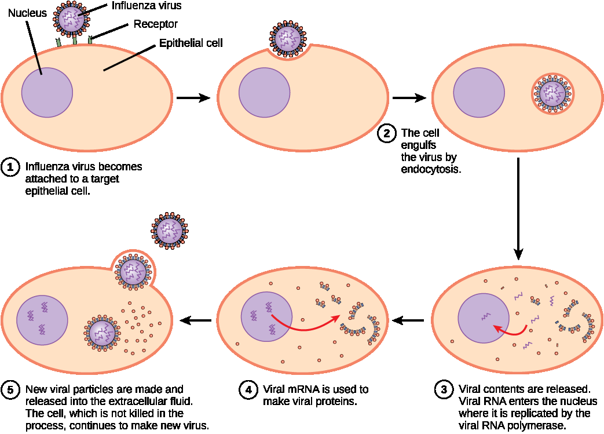
Describe the basic structure of a virus, including the capsid, capsomeres, and viral envelope. Explain how viruses were first discovered. Then describe the steps of viral replication (attachment, penetration, uncoating, replication, assembly, and release) and explain how retroviruses like HIV differ in their replication strategy.
- Describe how viruses were first discovered and how they are detected
- Explain the detailed steps of viral replication
- Describe how vaccines are used in prevention and treatment of viral diseases
Viruses cause a variety of diseases in animals, including humans, ranging from the common cold to potentially fatal illnesses like meningitis (Figure 17.7). These diseases can be treated by antiviral drugs or by vaccines, but some viruses, such as HIV, are capable of avoiding the immune response and mutating so as to become resistant to antiviral drugs.
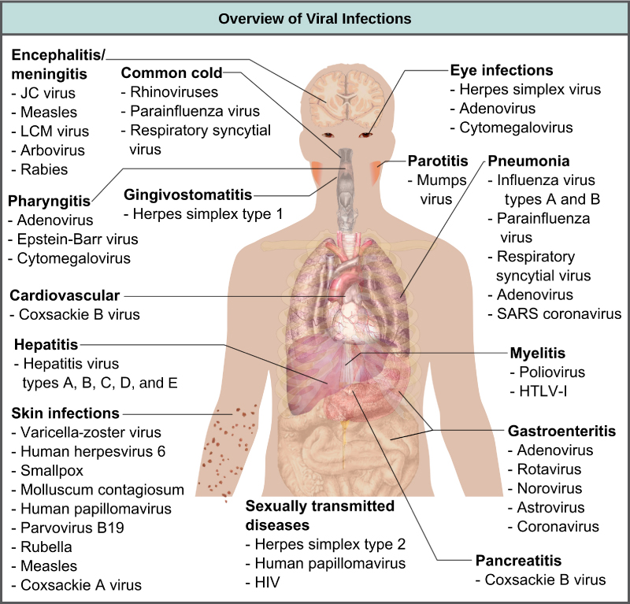
While we do have limited numbers of effective antiviral drugs, such as those used to treat HIV and influenza, the primary method of controlling viral disease is by vaccination, which is intended to prevent outbreaks by building immunity to a virus or virus family. A vaccine may be prepared using weakened live viruses, killed viruses, or molecular subunits of the virus. In general, live viruses lead to better immunity, but have the possibility of causing disease at some low frequency. Killed viral vaccine and the subunit viruses are both incapable of causing disease, but in general lead to less effective or long-lasting immunity.
Weakened live viral vaccines are designed in the laboratory to cause few symptoms in recipients while giving them immunity against future infections. Polio was one disease that represented a milestone in the use of vaccines. Polio epidemics occurred with increasing frequency and impact as the twentieth century progressed, becoming a terrifying and tragic event each summer. Tens of thousands of people died and many more were paralyzed; children made up a large portion of the victims. Using killed virus tested on the HeLa cell line (originally obtained from Henrietta Lacks and then mass produced to meet the need), Jonas Salk developed a successful vaccine. Mass immunization campaigns in the U.S. in the 1950s (killed vaccine) and 1960s (live vaccine) essentially eradicated the disease. The success of the polio vaccine paved the way for the routine dispensation of childhood vaccines against measles, mumps, rubella, chickenpox, and other diseases.
Live vaccines are usually made by attenuation (weakening) of the "wild-type" (disease-causing) virus by growing it in the laboratory in tissues or at temperatures different from what the virus is accustomed to in the host. For example, the virus may be grown in cells in a test tube, in bird embryos, or in live animals. The adaptation to these new cells or temperature induces mutations in the virus' genomes, allowing them to grow better in the laboratory while inhibiting their ability to cause disease when reintroduced into the conditions found in the host. These attenuated viruses thus still cause an infection, but they do not grow very well, allowing the immune response to develop in time to prevent major disease. The danger of using live vaccines, which are usually more effective than killed vaccines, is the low but significant risk that these viruses will revert back to their disease-causing form by back mutations. Back mutations occur when the vaccine undergoes mutations in the host such that it readapts to the host and can again cause disease, which can then be spread to other humans in an epidemic. This happened as recently as 2007 in Nigeria where mutations in a polio vaccine led to an epidemic of polio in that country.
Some vaccines are in continuous development because certain viruses, such as influenza and HIV, have a high mutation rate compared to other viruses or host cells. With influenza, mutation in genes for the surface molecules helps the virus evade the protective immunity that may have been obtained in a previous influenza season, making it necessary for individuals to get vaccinated every year. Other viruses, such as those that cause the childhood diseases measles, mumps, and rubella, mutate so little that the same vaccine is used year after year.
Other vaccines are developed because of a new mutation of a well known type of virus. Coronaviruses are very common in nature and various diseases, but a specific mutation of a particular coronavirus led to the COVID-19 pandemic. The rapid development of successful vaccines was due in part to scientists who had been working with other coronaviruses prior to the pandemic. Kizzmekia S. Corbett, a research fellow and scientific lead, had deep experience and knowledge of coronaviruses, which was instrumental in developing one of the first vaccines (Moderna). She is now applying that experience to other respiratory diseases and vaccine development processes.
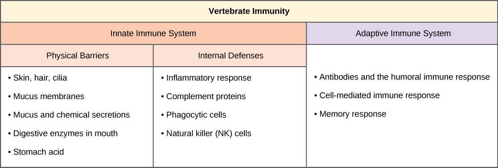
In some cases, vaccines can be used to treat an active viral infection. In the case of rabies, a fatal neurological disease transmitted in the saliva of rabies virus-infected animals, the progression of the disease from the time of the animal bite to the time it enters the central nervous system may be two weeks or longer. This is enough time to vaccinate an individual who suspects being bitten by a rabid animal, and the boosted immune response from the vaccination is enough to prevent the virus from entering nervous tissue. Thus, the fatal neurological consequences of the disease are averted and the individual only has to recover from the infected bite. This approach is also being used for the treatment of Ebola, one of the fastest and most deadly viruses affecting humans, though usually infecting limited populations. Ebola is also a leading cause of death in gorillas. Transmitted by bats and great apes, this virus can cause death in 70–90 percent of the infected within two weeks. Using newly developed vaccines that boost the immune response, there is hope that immune systems of affected individuals will be better able to control the virus, potentially reducing mortality rates.
Another way of treating viral infections is the use of antiviral drugs. These drugs often have limited ability to cure viral disease but have been used to control and reduce symptoms for a wide variety of viral diseases. For most viruses, these drugs inhibit the virus by blocking the actions of one or more of its proteins. It is important that the targeted proteins be encoded for by viral genes and that these molecules are not present in a healthy host cell. In fact, for many years, scientists thought that drugs capable of impacting viruses would be too toxic for the body to endure. To meet this challenge, researcher Gertrude Elion sought to develop drugs that would target only the virus through processes such as inhibiting only viral DNA replication. For example, some of her medicines focused on purines, while others affected DNA polymerase. There are large numbers of antiviral drugs available to treat infections, some specific for a particular virus and others that can affect multiple viruses.
Antivirals have been developed to treat genital herpes (herpes simplex II) and influenza. For genital herpes, drugs such as acyclovir, developed by Elion, can reduce the number and duration of the episodes of active viral disease during which patients develop viral lesions in their skins cells. As the virus remains latent in nervous tissue of the body for life, this drug is not a cure but can make the symptoms of the disease more manageable. For influenza, drugs like Tamiflu can reduce the duration of "flu" symptoms by one or two days, but the drug does not prevent symptoms entirely. Other antiviral drugs, such as Ribavirin, have been used to treat a variety of viral infections.
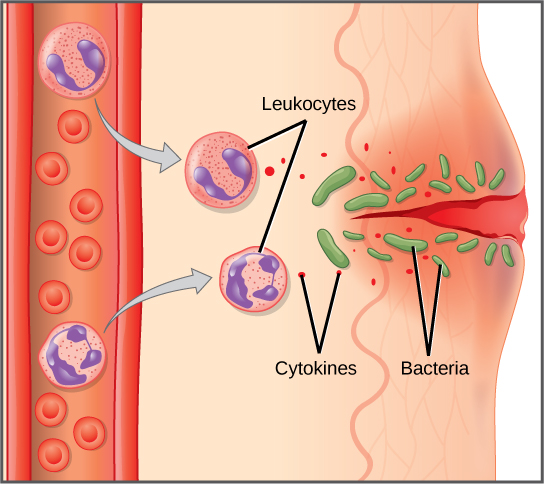
By far the most successful use of antivirals has been in the treatment of the retrovirus HIV, which causes a disease that, if untreated, is usually fatal within 10–12 years after being infected. Anti-HIV drugs have been able to control viral replication to the point that individuals receiving these drugs survive for a significantly longer time than the untreated.
A particular challenge with HIV is its tendency to mutate quickly within the body of an individual patient. This leads to individual drug resistance, and requires a different treatment strategy than many other diseases. David Ho was among the first to propose and develop a method to treat multiple mutations of HIV at the same time. Ho's efforts were a turning point in fighting AIDS. Anti-HIV drugs inhibit viral replication at many different phases of the HIV replicative cycle. Drugs have been developed that inhibit the fusion of the HIV viral envelope with the plasma membrane of the host cell (fusion inhibitors), the conversion of its RNA genome to double-stranded DNA (reverse transcriptase inhibitors), the integration of the viral DNA into the host genome (integrase inhibitors), and the processing of viral proteins (protease inhibitors).
When any of these drugs are used individually, the virus' high mutation rate allows the virus to rapidly evolve resistance to the drug. The breakthrough in the treatment of HIV was the development of highly active anti-retroviral therapy (HAART), which involves a mixture of different drugs, sometimes called a drug "cocktail." By attacking the virus at different stages of its replication cycle, it is difficult for the virus to develop resistance to multiple drugs at the same time. Still, even with the use of combination HAART therapy, there is concern that, over time, the virus will evolve resistance to this therapy. Thus, new anti-HIV drugs are constantly being developed with the hope of continuing the battle against this highly fatal virus.
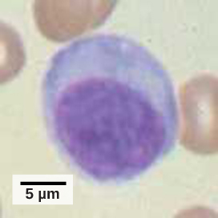
Explain the difference between live attenuated vaccines and killed vaccines. Describe the risk of back mutations. Then explain how HAART therapy works to combat HIV, including the different classes of drugs (fusion inhibitors, reverse transcriptase inhibitors, integrase inhibitors, and protease inhibitors).
- Describe the body's innate physical and chemical defenses
- Explain the inflammatory response
- Describe the complement system
The vertebrate, including human, immune system is a complex multilayered system for defending against external and internal threats to the integrity of the body. The system can be divided into two types of defense systems: the innate immune system, which is nonspecific toward a particular kind of pathogen, and the adaptive immune system, which is specific (Figure 17.8). Innate immunity is not caused by an infection or vaccination and depends initially on physical and chemical barriers that work on all pathogens, sometimes called the first line of defense. The second line of defense of the innate system includes chemical signals that produce inflammation and fever responses as well as mobilizing protective cells and other chemical defenses. The adaptive immune system mounts a highly specific response to substances and organisms that do not belong in the body. The adaptive system takes longer to respond and has a memory system that allows it to respond with greater intensity should the body reencounter a pathogen even years later.
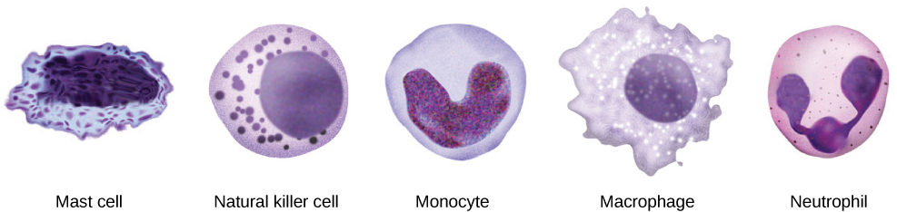
The body has significant physical barriers to potential pathogens. The skin contains the protein keratin, which resists physical entry into cells. Other body surfaces, particularly those associated with body openings, are protected by the mucous membranes. The sticky mucus provides a physical trap for pathogens, preventing their movement deeper into the body. The openings of the body, such as the nose and ears, are protected by hairs that catch pathogens, and the mucous membranes of the upper respiratory tract have cilia that constantly move pathogens trapped in the mucus coat up to the mouth.
The skin and mucous membranes also create a chemical environment that is hostile to many microorganisms. The surface of the skin is acidic, which prevents bacterial growth. Saliva, mucus, and the tears of the eye contain an enzyme that breaks down bacterial cell walls. The stomach secretions create a highly acidic environment, which kills many pathogens entering the digestive system.
Finally, the surface of the body and the lower digestive system have a community of microorganisms such as bacteria, archaea, and fungi that coexist without harming the body. There is evidence that these organisms are highly beneficial to their host, combating disease-causing organisms and outcompeting them for nutritional resources provided by the host body. Despite these defenses, pathogens may enter the body through skin abrasions or punctures, or by collecting on mucosal surfaces in large numbers that overcome the protections of mucus or cilia.
When pathogens enter the body, the innate immune system responds with a variety of internal defenses. These include the inflammatory response, phagocytosis, natural killer cells, and the complement system. White blood cells in the blood and lymph recognize pathogens as foreign to the body. A white blood cell is larger than a red blood cell, is nucleated, and is typically able to move using amoeboid locomotion. Because they can move on their own, white blood cells can leave the blood to go to infected tissues. For example, a monocyte is a type of white blood cell that circulates in the blood and lymph and develops into a macrophage after it moves into infected tissue. A macrophage is a large cell that engulfs foreign particles and pathogens. Mast cells are produced in the same way as white blood cells, but unlike circulating white blood cells, mast cells take up residence in connective tissues and especially mucosal tissues. They are responsible for releasing chemicals in response to physical injury. They also play a role in the allergic response, which will be discussed later in the chapter.
When a pathogen is recognized as foreign, chemicals called cytokines are released. A cytokine is a chemical messenger that regulates cell differentiation (form and function), proliferation (production), and gene expression to produce a variety of immune responses. Approximately 40 types of cytokines exist in humans. In addition to being released from white blood cells after pathogen recognition, cytokines are also released by the infected cells and bind to nearby uninfected cells, inducing those cells to release cytokines. This positive feedback loop results in a burst of cytokine production.
One class of early-acting cytokines is the interferons, which are released by infected cells as a warning to nearby uninfected cells. An interferon is a small protein that signals a viral infection to other cells. The interferons stimulate uninfected cells to produce compounds that interfere with viral replication. Interferons also activate macrophages and other cells.
The first cytokines to be produced encourage inflammation, a localized redness, swelling, heat, and pain. Inflammation is a response to physical trauma, such as a cut or a blow, chemical irritation, and infection by pathogens (viruses, bacteria, or fungi). The chemical signals that trigger an inflammatory response enter the extracellular fluid and cause capillaries to dilate (expand) and capillary walls to become more permeable, or leaky. The serum and other compounds leaking from capillaries cause swelling of the area, which in turn causes pain. Various kinds of white blood cells are attracted to the area of inflammation. The types of white blood cells that arrive at an inflamed site depend on the nature of the injury or infecting pathogen. For example, a neutrophil is an early arriving white blood cell that engulfs and digests pathogens. Neutrophils are the most abundant white blood cells of the immune system (Figure 17.9). Macrophages follow neutrophils and take over the phagocytosis function and are involved in the resolution of an inflamed site, cleaning up cell debris and pathogens.
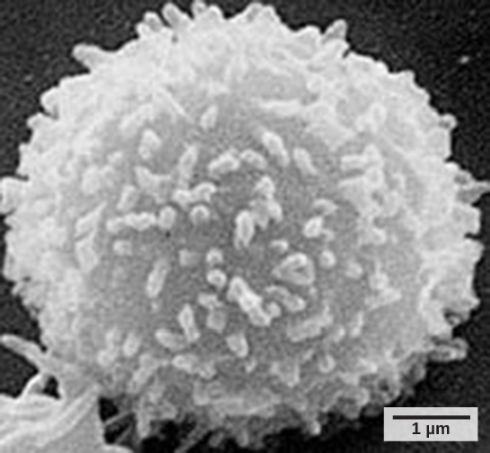
Cytokines also send feedback to cells of the nervous system to bring about the overall symptoms of feeling sick, which include lethargy, muscle pain, and nausea. Cytokines also increase the core body temperature, causing a fever. The elevated temperatures of a fever inhibit the growth of pathogens and speed up cellular repair processes. For these reasons, suppression of fevers should be limited to those that are dangerously high.
A lymphocyte is a white blood cell that contains a large nucleus (Figure 17.10). Most lymphocytes are associated with the adaptive immune response, but infected cells are identified and destroyed by natural killer cells, the only lymphocytes of the innate immune system. A natural killer (NK) cell is a lymphocyte that can kill cells infected with viruses (or cancerous cells). NK cells identify intracellular infections, especially from viruses, by the altered expression of major histocompatibility complex (MHC) I molecules on the surface of infected cells. MHC class I molecules are proteins on the surfaces of all nucleated cells that provide a sample of the cell's internal environment at any given time. Unhealthy cells, whether infected or cancerous, display an altered MHC class I complement on their cell surfaces.
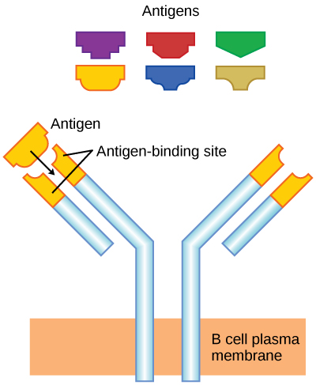
After the NK cell detects an infected or tumor cell, it induces programmed cell death, or apoptosis. Phagocytic cells then come along and digest the cell debris left behind. NK cells are constantly patrolling the body and are an effective mechanism for controlling potential infections and preventing cancer progression. The various types of immune cells are shown in Figure 17.11.
An array of approximately 20 types of proteins, called a complement system, is also activated by infection or the activity of the cells of the adaptive immune system and functions to destroy extracellular pathogens. Liver cells and macrophages synthesize inactive forms of complement proteins continuously; these proteins are abundant in the blood serum and are capable of responding immediately to infecting microorganisms. The complement system is so named because it is complementary to the innate and adaptive immune system. Complement proteins bind to the surfaces of microorganisms and are particularly attracted to pathogens that are already tagged by the adaptive immune system. This "tagging" involves the attachment of specific proteins called antibodies (discussed in detail later) to the pathogen. When they attach, the antibodies change shape providing a binding site for one of the complement proteins. After the first few complement proteins bind, a cascade of binding in a specific sequence of proteins follows in which the pathogen rapidly becomes coated in complement proteins.
Complement proteins perform several functions, one of which is to serve as a marker to indicate the presence of a pathogen to phagocytic cells and enhance engulfment. Certain complement proteins can combine to open pores in microbial cell membranes and cause lysis of the cells.
Describe the body's physical and chemical barriers that serve as the first line of defense. Explain the inflammatory response, including the roles of neutrophils, macrophages, and cytokines. Then describe how natural killer cells identify and destroy infected cells, and explain how the complement system functions to destroy extracellular pathogens.
- Explain adaptive immunity
- Describe cell-mediated immune response and humoral immune response
- Describe immune tolerance
The adaptive, or acquired, immune response takes days or even weeks to become established—much longer than the innate response; however, adaptive immunity is more specific to an invading pathogen. Adaptive immunity is an immunity that occurs after exposure to an antigen either from a pathogen or a vaccination. An antigen is a molecule that stimulates a response in the immune system. This part of the immune system is activated when the innate immune response is insufficient to control an infection. In fact, without information from the innate immune system, the adaptive response could not be mobilized. There are two types of adaptive responses: the cell-mediated immune response, which is controlled by activated T cells, and the humoral immune response, which is controlled by activated B cells and antibodies. Activated T and B cells whose surface binding sites are specific to the molecules on the pathogen greatly increase in numbers and attack the invading pathogen. Their attack can kill pathogens directly or they can secrete antibodies that enhance the phagocytosis of pathogens and disrupt the infection. Adaptive immunity also involves a memory to give the host long-term protection from reinfection with the same type of pathogen; on reexposure, this host memory will facilitate a rapid and powerful response.
Lymphocytes, which are white blood cells, are formed with other blood cells in the red bone marrow found in many flat bones, such as the shoulder or pelvic bones. The two types of lymphocytes of the adaptive immune response are B and T cells (Figure 17.12). Whether an immature lymphocyte becomes a B cell or T cell depends on where in the body it matures. The B cells remain in the bone marrow to mature (hence the name "B" for "bone marrow"), while T cells migrate to the thymus, where they mature (hence the name "T" for "thymus").
Maturation of a B or T cell involves becoming immunocompetent, meaning that it can recognize, by binding, a specific molecule or antigen (discussed below). During the maturation process, B and T cells that bind too strongly to the body's own cells are eliminated in order to minimize an immune response against the body's own tissues. Those cells that react weakly to the body's own cells, but have highly specific receptors on their cell surfaces that allow them to recognize a foreign molecule, or antigen, remain. This process occurs during fetal development and continues throughout life. The specificity of this receptor is determined by the genetics of the individual and is present before a foreign molecule is introduced to the body or encountered. Thus, it is genetics and not experience that initially provides a vast array of cells, each capable of binding to a different specific foreign molecule. Once they are immunocompetent, the T and B cells will migrate to the spleen and lymph nodes where they will remain until they are called on during an infection. B cells are involved in the humoral immune response, which targets pathogens loose in blood and lymph, and T cells are involved in the cell-mediated immune response, which targets infected cells.
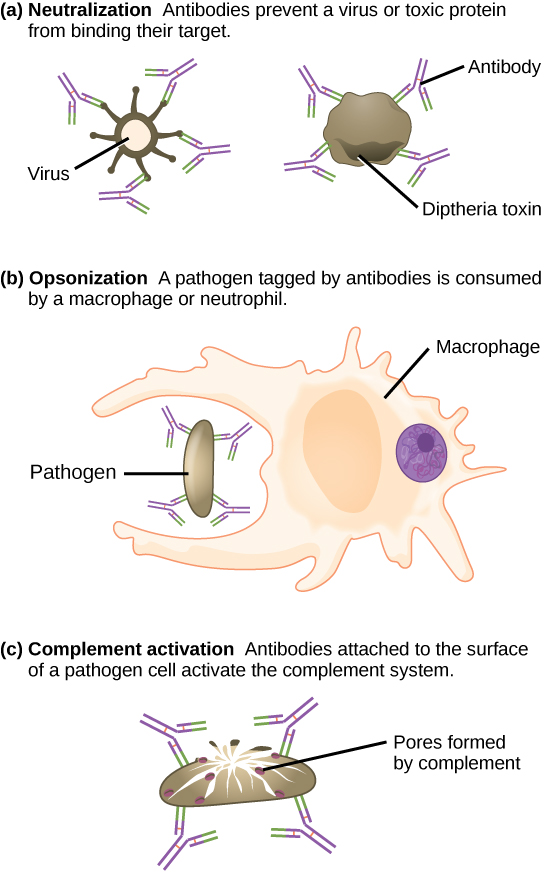
As mentioned, an antigen is a molecule that stimulates a response in the immune system. Not every molecule is antigenic. B cells participate in a chemical response to antigens present in the body by producing specific antibodies that circulate throughout the body and bind with the antigen whenever it is encountered. This is known as the humoral immune response. As discussed, during maturation of B cells, a set of highly specific B cells are produced that have many antigen receptor molecules in their membrane (Figure 17.13).
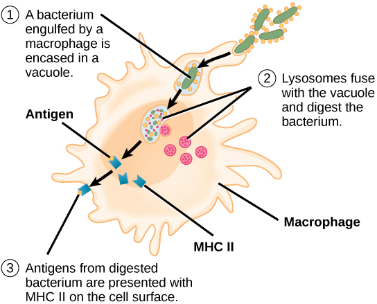
Each B cell has only one kind of antigen receptor, which makes every B cell different. Once the B cells mature in the bone marrow, they migrate to lymph nodes or other lymphatic organs. When a B cell encounters the antigen that binds to its receptor, the antigen molecule is brought into the cell by endocytosis and reappears on the surface of the cell bound to an MHC class II molecule. When this process is complete, the B cell is sensitized. In most cases, the sensitized B cell must then encounter a specific kind of T cell, called a helper T cell, before it is activated. The helper T cell must already have been activated through an encounter with the antigen (discussed below).
The helper T cell binds to the antigen-MHC class II complex and is induced to release cytokines that induce the B cell to divide rapidly, which makes thousands of identical (clonal) cells. These daughter cells become either plasma cells or memory B cells. The memory B cells remain inactive at this point, until another later encounter with the antigen, caused by a reinfection by the same bacteria or virus, results in them dividing into a new population of plasma cells. The plasma cells, on the other hand, produce and secrete large quantities, up to 100 million molecules per hour, of antibody molecules. An antibody, also known as an immunoglobulin (Ig), is a protein that is produced by plasma cells after stimulation by an antigen. Antibodies are the agents of humoral immunity. Antibodies occur in the blood, in gastric and mucus secretions, and in breast milk. Antibodies in these bodily fluids can bind pathogens and mark them for destruction by phagocytes before they can infect cells.
These antibodies circulate in the blood stream and lymphatic system and bind with the antigen whenever it is encountered. The binding can fight infection in several ways. Antibodies can bind to viruses or bacteria and interfere with the chemical interactions required for them to infect or bind to other cells. The antibodies may create bridges between different particles containing antigenic sites clumping them all together and preventing their proper functioning. The antigen-antibody complex stimulates the complement system described previously, destroying the cell bearing the antigen. Phagocytic cells, such as those already described, are attracted by the antigen-antibody complexes, and phagocytosis is enhanced when the complexes are present. Finally, antibodies stimulate inflammation, and their presence in mucus and on the skin prevents pathogen attack.
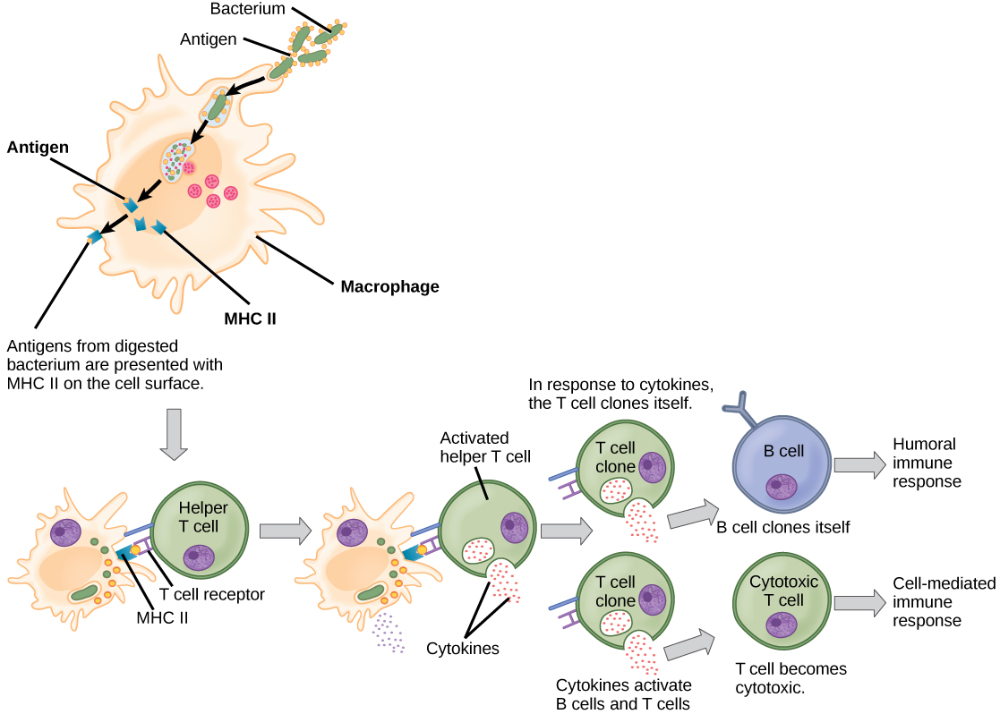
Antibodies coat extracellular pathogens and neutralize them by blocking key sites on the pathogen that enhance their infectivity (such as receptors that "dock" pathogens on host cells) (Figure 17.14). Antibody neutralization can prevent pathogens from entering and infecting host cells. The neutralized antibody-coated pathogens can then be filtered by the spleen and eliminated in urine or feces.
Antibodies also mark pathogens for destruction by phagocytic cells, such as macrophages or neutrophils, in a process called opsonization. In a process called complement fixation, some antibodies provide a place for complement proteins to bind. The combination of antibodies and complement promotes rapid clearing of pathogens.
The production of antibodies by plasma cells in response to an antigen is called active immunity and describes the host's active response of the immune system to an infection or to a vaccination. There is also a passive immune response where antibodies come from an outside source, instead of the individual's own plasma cells, and are introduced into the host. For example, antibodies circulating in a pregnant person's body move across the placenta into the developing fetus. The child benefits from the presence of these antibodies for up to several months after birth. In addition, a passive immune response is possible by injecting antibodies into an individual in the form of an antivenom to a snake-bite toxin or antibodies in blood serum to help fight a hepatitis infection. This gives immediate protection since the body does not need the time required to mount its own response.
The availability and reliability of antibodies makes them ideally suited for use in medical tests and investigations. Radioimmunossays, for example, rely on the antigen-antibody interaction. Usually, a specific antigen is made radioactive, allowed to bind to its antibody, and then introduced into a sample substance, such as a patient's blood. By measuring eventual changes in the quantity of the bound and unbound antigen, analysts can detect the presence and/or concentration of certain substances. Developed by Rosalyn Sussman Yalow and Solomon Berson in the 1950s, the technique is known for extreme sensitivity, meaning that it can detect and measure very small quantities of a substance. It is used in narcotics detection, blood bank screening, early cancer screening, hormone measurement, and allergy diagnosis. Based on her significant contribution to the field, Yalow received a Nobel Prize, making her the second woman to be awarded the prize for medicine.
Unlike B cells, T lymphocytes are unable to recognize pathogens without assistance. Instead, dendritic cells and macrophages first engulf and digest pathogens into hundreds or thousands of antigens. Then, an antigen-presenting cell (APC) detects, engulfs, and informs the adaptive immune response about an infection. When a pathogen is detected, these APCs will engulf and break it down through phagocytosis. Antigen fragments will then be transported to the surface of the APC, where they will serve as an indicator to other immune cells. A dendritic cell is an immune cell that mops up antigenic materials in its surroundings and presents them on its surface. Dendritic cells are located in the skin, the linings of the nose, lungs, stomach, and intestines. These positions are ideal locations to encounter invading pathogens. Once they are activated by pathogens and mature to become APCs they migrate to the spleen or a lymph node. Macrophages also function as APCs. After phagocytosis by a macrophage, the phagocytic vesicle fuses with an intracellular lysosome. Within the resulting phagolysosome, the components are broken down into fragments; the fragments are then loaded onto MHC class II molecules and are transported to the cell surface for antigen presentation (Figure 17.15). Helper T cells cannot properly respond to an antigen unless it is processed and embedded in an MHC class II molecule. The APCs express MHC class II on their surfaces, and when combined with a foreign antigen, these complexes signal an invader.
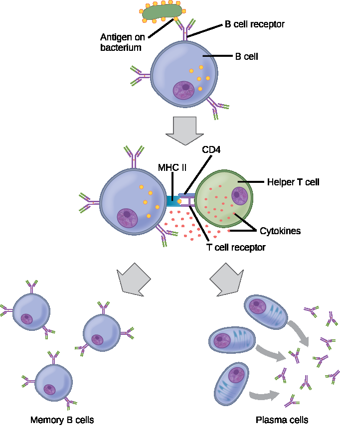
T cells have many functions. Some respond to APCs of the innate immune system and indirectly induce immune responses by releasing cytokines. Others stimulate B cells to start the humoral response as described previously. Another type of T cell detects APC signals and directly kills the infected cells, while some are involved in suppressing inappropriate immune reactions to harmless or "self" antigens.
There are two main types of T cells: helper T lymphocytes (TH) and the cytotoxic T lymphocytes (TC). The TH lymphocytes function indirectly to tell other immune cells about potential pathogens. TH lymphocytes recognize specific antigens presented by the MHC class II complexes of APCs. There are two populations of TH cells: TH1 and TH2. TH1 cells secrete cytokines to enhance the activities of macrophages and other T cells. TH2 cells stimulate naïve B cells to secrete antibodies. Whether a TH1 or a TH2 immune response develops depends on the specific types of cytokines secreted by cells of the innate immune system, which in turn depends on the nature of the invading pathogen.
Cytotoxic T cells (TC) are the key component of the cell-mediated part of the adaptive immune system and attack and destroy infected cells. TC cells are particularly important in protecting against viral infections; this is because viruses replicate within cells where they are shielded from extracellular contact with circulating antibodies. Once activated, the TC creates a large clone of cells with one specific set of cell-surface receptors, as in the case with proliferation of activated B cells. As with B cells, the clone includes active TC cells and inactive memory TC cells. The resulting active TC cells then identify infected host cells. Because of the time required to generate a population of clonal T and B cells, there is a delay in the adaptive immune response compared to the innate immune response.
TC cells attempt to identify and destroy infected cells before the pathogen can replicate and escape, thereby halting the progression of intracellular infections. TC cells also support NK lymphocytes to destroy early cancers. Cytokines secreted by the TH1 response that stimulates macrophages also stimulate TC cells and enhance their ability to identify and destroy infected cells and tumors. A summary of how the humoral and cell-mediated immune responses are activated appears in Figure 17.16.
B plasma cells and TC cells are collectively called effector cells because they are involved in "effecting" (bringing about) the immune response of killing pathogens and infected host cells.
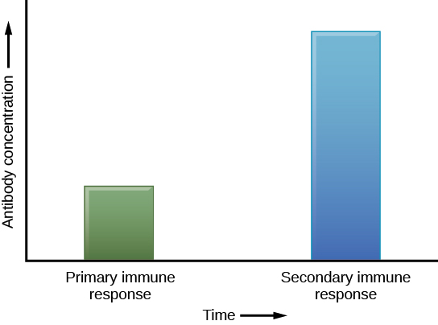
The adaptive immune system has a memory component that allows for a rapid and large response upon reinvasion of the same pathogen. During the adaptive immune response to a pathogen that has not been encountered before, known as the primary immune response, plasma cells secreting antibodies and differentiated T cells increase, then plateau over time. As B and T cells mature into effector cells, a subset of the naïve populations differentiates into B and T memory cells with the same antigen specificities (Figure 17.17). A memory cell is an antigen-specific B or T lymphocyte that does not differentiate into an effector cell during the primary immune response, but that can immediately become an effector cell on reexposure to the same pathogen. As the infection is cleared and pathogenic stimuli subside, the effectors are no longer needed and they undergo apoptosis. In contrast, the memory cells persist in the circulation.
If the pathogen is never encountered again during the individual's lifetime, B and T memory cells will circulate for a few years or even several decades and will gradually die off, having never functioned as effector cells. However, if the host is re-exposed to the same pathogen type, circulating memory cells will immediately differentiate into plasma cells and TC cells without input from APCs or TH cells. This is known as the secondary immune response. One reason why the adaptive immune response is delayed is because it takes time for naïve B and T cells with the appropriate antigen specificities to be identified, activated, and proliferate. On reinfection, this step is skipped, and the result is a more rapid production of immune defenses. Memory B cells that differentiate into plasma cells output tens to hundreds-fold greater antibody amounts than were secreted during the primary response (Figure 17.18). This rapid and dramatic antibody response may stop the infection before it can even become established, and the individual may not realize they had been exposed.
Vaccination is based on the knowledge that exposure to noninfectious antigens, derived from known pathogens, generates a mild primary immune response. The immune response to vaccination may not be perceived by the host as illness but still confers immune memory. When exposed to the corresponding pathogen to which an individual was vaccinated, the reaction is similar to a secondary exposure. Because each reinfection generates more memory cells and increased resistance to the pathogen, some vaccine courses involve one or more booster vaccinations to mimic repeat exposures.
Lymph is the watery fluid that bathes tissues and organs and contains protective white blood cells but does not contain erythrocytes. Lymph moves about the body through the lymphatic system, which is made up of vessels, lymph ducts, lymph glands, and organs, such as tonsils, adenoids, thymus, and spleen.
Although the immune system is characterized by circulating cells throughout the body, the regulation, maturation, and intercommunication of immune factors occur at specific sites. The blood circulates immune cells, proteins, and other factors through the body. Approximately 0.1 percent of all cells in the blood are leukocytes, which include monocytes (the precursor of macrophages) and lymphocytes. Most cells in the blood are red blood cells. Cells of the immune system can travel between the distinct lymphatic and blood circulatory systems, which are separated by interstitial space, by a process called extravasation (passing through to surrounding tissue).
Recall that cells of the immune system originate from stem cells in the bone marrow. B cell maturation occurs in the bone marrow, whereas progenitor cells migrate from the bone marrow and develop and mature into naïve T cells in the organ called the thymus.
On maturation, T and B lymphocytes circulate to various destinations. Lymph nodes scattered throughout the body house large populations of T and B cells, dendritic cells, and macrophages (Figure 17.19). Lymph gathers antigens as it drains from tissues. These antigens then are filtered through lymph nodes before the lymph is returned to circulation. APCs in the lymph nodes capture and process antigens and inform nearby lymphocytes about potential pathogens.
The spleen houses B and T cells, macrophages, dendritic cells, and NK cells (Figure 17.20). The spleen is the site where APCs that have trapped foreign particles in the blood can communicate with lymphocytes. Antibodies are synthesized and secreted by activated plasma cells in the spleen, and the spleen filters foreign substances and antibody-complexed pathogens from the blood. Functionally, the spleen is to the blood as lymph nodes are to the lymph.
The innate and adaptive immune responses compose the systemic immune system (affecting the whole body), which is distinct from the mucosal immune system. Mucosa associated lymphoid tissue (MALT) is a crucial component of a functional immune system because mucosal surfaces, such as the nasal passages, are the first tissues onto which inhaled or ingested pathogens are deposited. The mucosal tissue includes the mouth, pharynx, and esophagus, and the gastrointestinal, respiratory, and urogenital tracts.
Mucosal immunity is formed by MALT, which functions independently of the systemic immune system, and which has its own innate and adaptive components. MALT is a collection of lymphatic tissue that combines with epithelial tissue lining the mucosa throughout the body. This tissue functions as the immune barrier and response in areas of the body with direct contact to the external environment. The systemic and mucosal immune systems use many of the same cell types. Foreign particles that make their way to MALT are taken up by absorptive epithelial cells and delivered to APCs located directly below the mucosal tissue. APCs of the mucosal immune system are primarily dendritic cells, with B cells and macrophages having minor roles. Processed antigens displayed on APCs are detected by T cells in the MALT and at the tonsils, adenoids, appendix, or the mesenteric lymph nodes of the intestine. Activated T cells then migrate through the lymphatic system and into the circulatory system to mucosal sites of infection.
The immune system has to be regulated to prevent wasteful, unnecessary responses to harmless substances, and more importantly, so that it does not attack "self." The acquired ability to prevent an unnecessary or harmful immune response to a detected foreign substance known not to cause disease, or self-antigens, is described as immune tolerance. The primary mechanism for developing immune tolerance to self-antigens occurs during the selection for weakly self-binding cells during T and B lymphocyte maturation. There are populations of T cells that suppress the immune response to self-antigens and that suppress the immune response after the infection has cleared to minimize host cell damage induced by inflammation and cell lysis. Immune tolerance is especially well developed in the mucosa of the upper digestive system because of the tremendous number of foreign substances (such as food proteins) that APCs of the oral cavity, pharynx, and gastrointestinal mucosa encounter. Immune tolerance is brought about by specialized APCs in the liver, lymph nodes, small intestine, and lung that present harmless antigens to a diverse population of regulatory T (Treg) cells, specialized lymphocytes that suppress local inflammation and inhibit the secretion of stimulatory immune factors. The combined result of Treg cells is to prevent immunologic activation and inflammation in undesired tissue compartments and to allow the immune system to focus on pathogens instead.
Compare and contrast the humoral immune response and the cell-mediated immune response. Explain the roles of B cells, helper T cells, and cytotoxic T cells. Describe how memory cells provide long-term immunity and how this relates to vaccination.
- Describe hypersensitivity
- Define autoimmunity
A functioning immune system is essential for survival, but even the sophisticated cellular and molecular defenses of the mammalian immune response can be defeated by pathogens at virtually every step. In the competition between immune protection and pathogen evasion, pathogens have the advantage of more rapid evolution because of their shorter generation time, large population sizes and often higher mutation rates. Thus pathogens have evolved a diverse array of immune escape mechanisms. For instance, Streptococcus pneumoniae (the bacterium that causes pneumonia and meningitis) surrounds itself with a capsule that inhibits phagocytes from engulfing it and displaying antigens to the adaptive immune system. Staphylococcus aureus (the bacterium that can cause skin infections, abscesses, and meningitis) synthesizes a toxin called leukocidin that kills phagocytes after they engulf the bacterium. Other pathogens can also hinder the adaptive immune system. HIV infects TH cells using their CD4 surface molecules, gradually depleting the number of TH cells in the body (Figure 17.21); this inhibits the adaptive immune system's capacity to generate sufficient responses to infection or tumors. As a result, HIV-infected individuals often suffer from infections that would not cause illness in people with healthy immune systems but which can cause devastating illness to immune-compromised individuals.
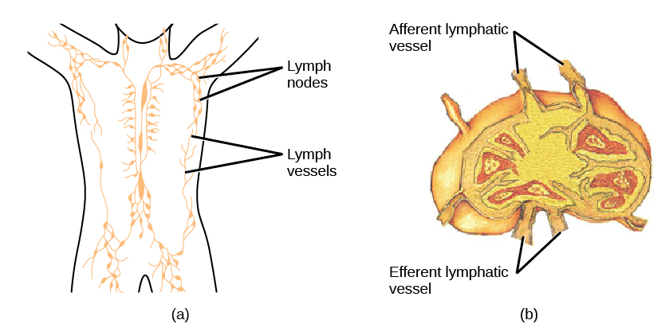
Inappropriate responses of immune cells and molecules themselves can also disrupt the proper functioning of the entire system, leading to host-cell damage that can become fatal.
Immunodeficiency is a failure, insufficiency, or delay in the response of the immune system, which may be acquired or inherited. Immunodeficiency can allow pathogens or tumor cells to gain a foothold and replicate or proliferate to high enough levels so that the immune system becomes overwhelmed. Immunodeficiency can be acquired as a result of infection with certain pathogens that attack the cells of the immune system itself (such as HIV), chemical exposure (including certain medical treatments such as chemotherapy), malnutrition, or extreme stress. For instance, radiation exposure can destroy populations of lymphocytes and elevate an individual's susceptibility to infections and cancer. Rarely, primary immunodeficiencies that are present from birth may also occur. For example, severe combined immunodeficiency disease (SCID) is a condition in which children are born without functioning B or T cells.
A maladaptive immune response toward harmless foreign substances or self-antigens that occur after tissue sensitization is termed a hypersensitivity. Types of hypersensitivities include immediate, delayed, and autoimmune. A large proportion of the human population is affected by one or more types of hypersensitivity.
The immune reaction that results from immediate hypersensitivities in which an antibody-mediated immune response occurs within minutes of exposure to a usually harmless antigen is called an allergy. In the United States, 20 percent of the population exhibits symptoms of allergy or asthma, whereas 55 percent test positive against one or more allergens. On initial exposure to a potential allergen, an allergic individual synthesizes antibodies through the typical process of APCs presenting processed antigen to TH cells that stimulate B cells to produce the antibodies. The antibody molecules interact with mast cells embedded in connective tissues. This process primes, or sensitizes, the tissue. On subsequent exposure to the same allergen, antibody molecules on mast cells bind the antigen and stimulate the mast cell to release histamine and other inflammatory chemicals; these chemical mediators then recruit eosinophils (a type of white blood cell), which also appear to be adapted to responding to parasitic worms (Figure 17.22). Eosinophils release factors that enhance the inflammatory response and the secretions of mast cells. The effects of an allergic reaction range from mild symptoms like sneezing and itchy, watery eyes to more severe or even life-threatening reactions involving intensely itchy welts or hives, airway constriction with severe respiratory distress, and plummeting blood pressure caused by dilating blood vessels and fluid loss from the circulatory system. This extreme reaction, typically in response to an allergen introduced to the circulatory system, is known as anaphylactic shock. Antihistamines are an insufficient counter to anaphylactic shock and if not treated with epinephrine to counter the blood pressure and breathing effects, this condition can be fatal.
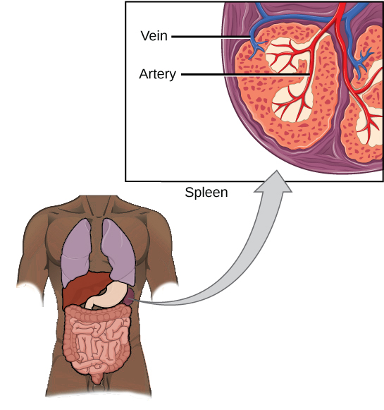
Delayed hypersensitivity is a cell-mediated immune response that takes approximately one to two days after secondary exposure for a maximal reaction. This type of hypersensitivity involves the TH1 cytokine-mediated inflammatory response and may cause local tissue lesions or contact dermatitis (rash or skin irritation). Delayed hypersensitivity occurs in some individuals in response to contact with certain types of jewelry or cosmetics. Delayed hypersensitivity facilitates the immune response to poison ivy and is also the reason why the skin test for tuberculosis results in a small region of inflammation on individuals who were previously exposed to Mycobacterium tuberculosis, the organism that causes tuberculosis.
Autoimmunity is a type of hypersensitivity to self-antigens that affects approximately five percent of the population. Most types of autoimmunity involve the humoral immune response. An antibody that inappropriately marks self-components as foreign is termed an autoantibody. In patients with myasthenia gravis, an autoimmune disease, muscle-cell receptors that induce contraction in response to acetylcholine are targeted by antibodies. The result is muscle weakness that may include marked difficultly with fine or gross motor functions. In systemic lupus erythematosus, a diffuse autoantibody response to the individual's own DNA and proteins results in various systemic diseases (Figure 17.23). Systemic lupus erythematosus may affect the heart, joints, lungs, skin, kidneys, central nervous system, or other tissues, causing tissue damage through antibody binding, complement recruitment, lysis, and inflammation.
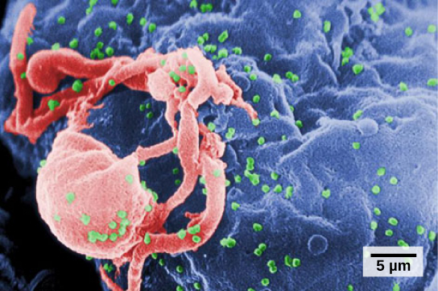
Autoimmunity can develop with time and its causes may be rooted in molecular mimicry, a situation in which one molecule is similar enough in shape to another molecule that it binds the same immune receptors. Antibodies and T-cell receptors may bind self-antigens that are structurally similar to pathogen antigens. As an example, infection with Streptococcus pyogenes (the bacterium that causes strep throat) may generate antibodies or T cells that react with heart muscle, which has a similar structure to the surface of S. pyogenes. These antibodies can damage heart muscle with autoimmune attacks, leading to rheumatic fever. Insulin-dependent (Type 1) diabetes mellitus arises from a destructive inflammatory TH1 response against insulin-producing cells of the pancreas. Patients with this autoimmunity must be treated with regular insulin injections.
HIV infects TH cells using their CD4 surface molecules, gradually depleting the number of TH cells in the body; this inhibits the adaptive immune system's capacity to generate sufficient responses to infection or tumors. As a result, HIV-infected individuals often suffer from infections that would not cause illness in people with healthy immune systems but which can cause devastating illness to immune-compromised individuals.
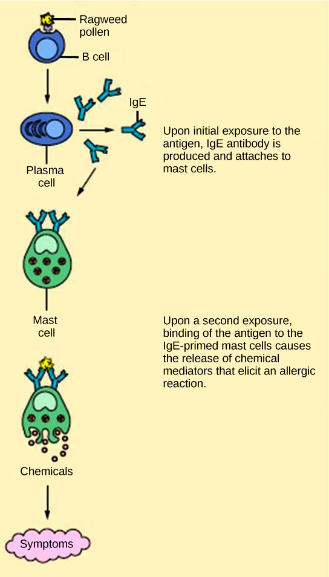
By far the most successful use of antivirals has been in the treatment of the retrovirus HIV, which causes a disease that, if untreated, is usually fatal within 10–12 years after being infected. Anti-HIV drugs have been able to control viral replication to the point that individuals receiving these drugs survive for a significantly longer time than the untreated.
A particular challenge with HIV is its tendency to mutate quickly within the body of an individual patient. This leads to individual drug resistance, and requires a different treatment strategy than many other diseases. David Ho was among the first to propose and develop a method to treat multiple mutations of HIV at the same time. Ho's efforts were a turning point in fighting AIDS. Anti-HIV drugs inhibit viral replication at many different phases of the HIV replicative cycle. Drugs have been developed that inhibit the fusion of the HIV viral envelope with the plasma membrane of the host cell (fusion inhibitors), the conversion of its RNA genome to double-stranded DNA (reverse transcriptase inhibitors), the integration of the viral DNA into the host genome (integrase inhibitors), and the processing of viral proteins (protease inhibitors).
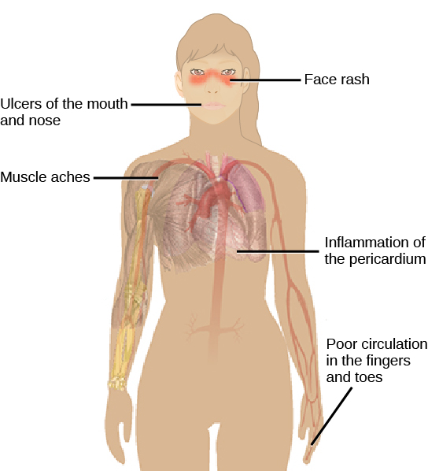
When any of these drugs are used individually, the virus' high mutation rate allows the virus to rapidly evolve resistance to the drug. The breakthrough in the treatment of HIV was the development of highly active anti-retroviral therapy (HAART), which involves a mixture of different drugs, sometimes called a drug "cocktail." By attacking the virus at different stages of its replication cycle, it is difficult for the virus to develop resistance to multiple drugs at the same time. Still, even with the use of combination HAART therapy, there is concern that, over time, the virus will evolve resistance to this therapy. Thus, new anti-HIV drugs are constantly being developed with the hope of continuing the battle against this highly fatal virus.
Explain the difference between immunodeficiency and hypersensitivity. Describe how an allergic reaction occurs, including the roles of mast cells and histamine. Explain how molecular mimicry can lead to autoimmune disease, and describe how HIV disrupts the immune system.
- Viruses (structure, replication, lytic/lysogenic cycles, HIV, vaccines, prions, antiviral drugs) — CB 17.1
- Innate Immunity (physical/chemical barriers, inflammation, phagocytosis, NK cells, complement) — CB 17.2
- Adaptive Immunity (B cells, T cells, antibodies, humoral/cell-mediated response, memory cells) — CB 17.3
- Disruptions in the Immune System (allergies, autoimmune diseases, immunodeficiency, HIV/AIDS) — CB 17.4